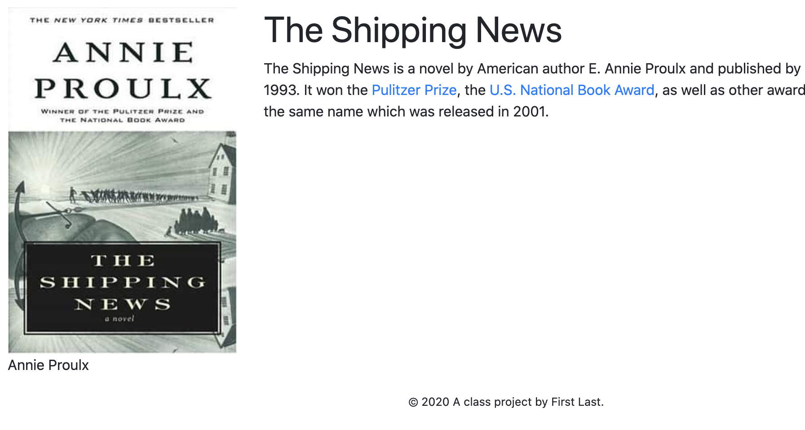

31 Baking detail pages
To recreate our Ship’s log blog we are going to introduce two new features: Using Google Docs/ArchieML and “baking” pages.
Before we dive into it, let’s go through how the concepts work by looking at the Library Books example included in the project. As we go through it, think about how each book could be a blog post.
31.1 Let’s review the example
Go back to your site and click on the “Index example” link we added to the nav. The page shows three different books at the top of the page. There is a link at the bottom of each book … click on those and gander at them.
This is a screen shot of one of those pages. (It’s a good book. Read it.)

All of the individual book pages have the same structure: A book photo on the left, and on the right a headline and blurb about the book.
All the book pages were built from the same template, but the content is different. It’s much like amazon.com, where every item for purchase on the site has the same page structure, but the content is different depending on the item you are viewing.
All of these book pages were built automagically from a data source. Amazon works similarly, but pulls the item contents from a database. (It’s a little more complicated than that, but you get the idea.)
Here’s how it works. We’ll work through it one step at at time:
31.1.1 It starts with data
There is a Library books data Google Doc that is viewable to the public.
Take a look at how that doc is structured. It uses a “language” called ArchieML developed by the New York Times. It allows authors to create structured text in a Google Doc and for that content to be converted into JSON for projects like this. It’s not particularly hard to use (it was created for reporters, after all) but it takes some getting used to.
At the top we have [books], which is naming our array.
Then each group of stuff is a new entry in our data. Each line starts with a key: and then is followed by a value. The values even support links that get converted to hrefs in our final product.
The second page of the Google Doc has some others examples of structured data, but we’ll skip those for now. Just know they are there.
This document is downloaded as data into our project when we run gulp fetch. It is “configured” in the project.config.json file where we earlier added our pirate ships Google Sheets data.
In the project.config.json the only difference in using a sheet vs doc is "type": "doc" vs "type": "sheet".
31.1.2 Peek at the data
- Go ahead and open
src/data/library.json.
You’ll see the books array near the top. That’s the only one we are worried about here, but you’ll also see the other example arrays there.
As an aside: You can use any properly-formatted
.jsonfile in a project as long as it is in thesrc/datafolder; it doesn’t have to come from a Google Doc or Sheet. It’s just a nice convenience because of the shared editing features that Google gives you.
31.1.3 The bake template
OK, so we understand the data, but how are we using it?
The baking feature in the project needs three things: The data (got it!), a template to build the pages from, and a configuration to match the data to the template.
- Open up our example template in
src/njk/_templates/bake-book.njk.
The first line {% extends '_templates/base.njk' %} gives us the structure of our site. We’ve seen that before.
The next line {% set relative_path = "../" %} is something we need to include because our generated book pages are created INSIDE another folder like this, books/the-shipping-news.html. (You might remember we included the {{ relative_path }} variable when we added navigation links earlier. To make a long story short, we need both of these things to make navigation links work from these pages.)
The next two lines are our page_title and page_description blocks to set those for each book page. You’ll notice that a variable pulling data like {{ title }} is inside those. What’s a little different here than in our pirate ship loop is we don’t have to name what file or array this is coming from. That’s because we handle it later in the project.config.json.
Then we get to the “block content”. This has our page structure for each book page. It’s set up to be a basic two-column layout with the photo on the left and the text on the right. Note that there are data variables used throughout, assigning data to different places on the page. Again, we just need the “key” name because we define the file and array later.
The only other thing new here is {{ blurb | safe }} for the description of the book. blurb is the name of the key value, and the | safe part is something in Nunjucks called a “filter” that allows you to manipulate variable data in some way. In this case safe is allowing us to use HTML in our data, turning links in our Google Doc into hrefs that work.
31.1.4 Lastly, the project.config
If you open our project.config.json back up and look at the array called "to_bake". This is where we define which template should be used with what data. Here is an example and description of each field:
"to_bake": [
{
"template": "bake-book",
"data": "library",
"array": "books",
"slug": "slug",
"path": "books"
}
]templateis the name of the template file stored insrc/njk/_templatesthat will be used to build the pages. Note you don’t need the extension in name.datais the name of the data file to build from. You don’t need.jsonin the name.arrayis the name of the array you are using from the JSON file.slugis a key required from the data that will become the filename of each file created. The field used in the data needs to be in a URL-friendly format with all lowercase letters with dashes instead of spaces.pathis an optional folder to save the files into. Use an empty string to save the files at the root ofdocs/.
31.1.5 The generation
With these three things: The data, the template, and the config that brings them together, we can run gulp bake (or gulp dev) and a new page will be created in our destination folder for every item in our data. Whether there are three items or 300.
Pretty f’n cool, isn’t it? With a project like this you can create something like a restaurant guide with a unique page for every establishment, all while managing the data in a Google Sheet or Doc.